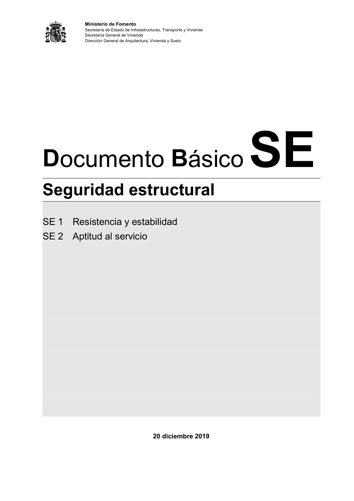

DB-SE Seguridad estructural · edición 2019-12-20 · capa oficial
Documento DB-SE-oficial · SHA-256 del PDF ec1fbfc51b28c4d62667aec480585b76fe31727ccf1615015a5d2d2677763f8f
Página física 1 de 45.
Copia fiel del PDF fuente · Fuente oficial
Ficha de la disposición en la fuente oficial
Formato: Texto de la página (Markdown)
Ministerio de Fomento Secretaría de Estado de Infraestructuras, Transporte y Vivienda Secretaría General de Vivienda Dirección General de Arquitectura, Vivienda y Suelo 20 diciembre 2019 Documento Básico SE Seguridad estructural SE 1 Resistencia y estabilidad SE 2 Aptitud al servicio
